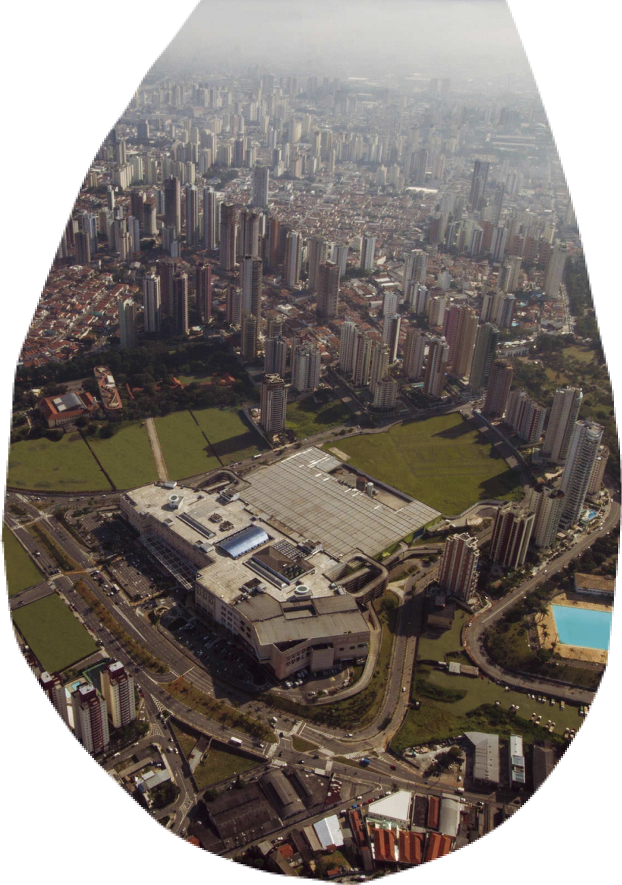
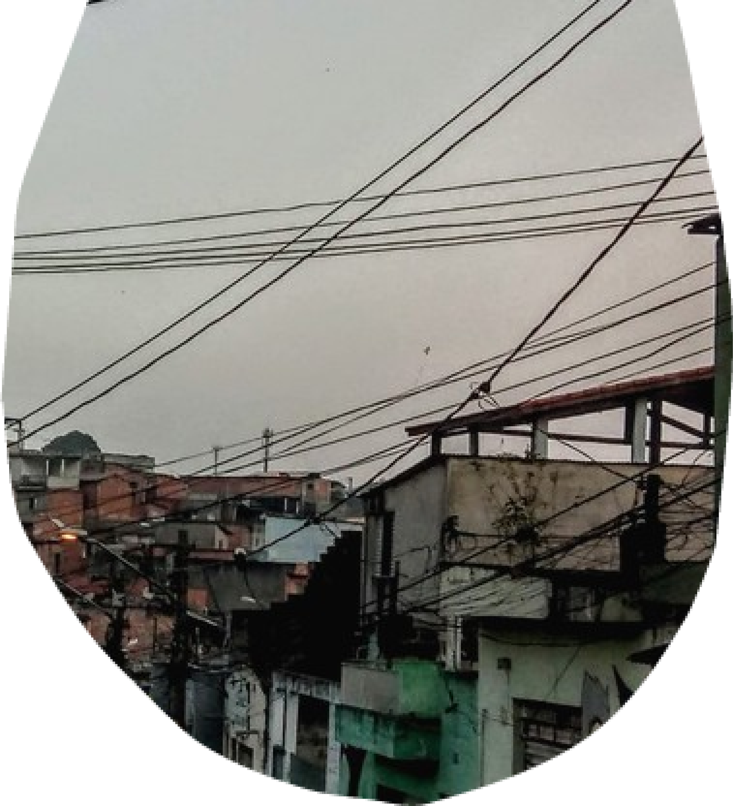

<div class="voc-sabia-polo-mooca">
    <div class="div">
      <div class="overlap">
        <div class="overlap-group">
          <div class="group">
            <div class="overlap-group-2">
              <div class="voc">VOCÊ</div>
              <div class="sabia">SABIA?</div>
            </div>
          </div>
          <div class="paragrafo-com-scroll">
            <p class="a-atual-identidade">
                A diversidade cultural que se reflete na culinária, religião e tradições do bairro de São Mateus é fruto de sua história 
                tão rica e peculiar. Quando tudo ainda era mata virgem, São Mateus foi habitada por povos indígenas, e com os avanços 
                da urbanização chegaram imigrantes italianos, espanhóis, portugueses, japoneses e árabes, 
                e também migrantes nordestinos que contribuíram para a formação do bairro.&nbsp;&nbsp;<br /><br />
                A saga de São Mateus: Da mata virgem à metrópole vibrante <br/>
                Dos primórdios à urbanização: <br/>
                Século XIX: A região era dominada pela mata virgem, habitada por povos indígenas.<br/>
                1842: A Fazenda Rio das Pedras, de João Francisco Rocha, inicia a ocupação da área.<br/>
                1912: A Estrada de Ferro da Cantareira cruza a região, impulsionando o crescimento.<br/>
                1946: A família Bei compra a Fazenda Rio das Pedras e funda o loteamento Cidade São Mateus.<br/>
                1948: Início da urbanização, com abertura de ruas e avenidas.<br/>
                1950-1960: Explosão demográfica, impulsionada pela migração interna e industrialização.<br/>
                Década de 1970: Chegada de grandes empresas e investimentos em infraestrutura.<br/>
                Década de 1980: Consolidação como um dos maiores bairros da zona leste.<br/>
                Atualidade: Bairro vibrante, com forte comércio, serviços e polos culturais.&nbsp;&nbsp;<br /><br />
                Um mosaico de culturas:<br/>
                Imigrantes italianos, espanhóis, portugueses, japoneses e árabes contribuíram para a formação do bairro. <br/>
                Migrantes nordestinos e de outras regiões do Brasil buscaram melhores oportunidades em São Mateus. <br/>
                Diversidade cultural se reflete na culinária, religião, costumes e tradições do bairro. <br/>
                &nbsp;&nbsp;<br /><br />
                Desafios e conquistas:<br />
                Déficit de infraestrutura e serviços básicos, como transporte, saúde e educação, marcam a história do bairro.<br />
                A comunidade se mobiliza para superar desafios e construir um futuro melhor.<br />
                Projetos sociais e investimentos públicos contribuem para o desenvolvimento da região.&nbsp;&nbsp;<br /><br />
                Um bairro em constante transformação:<br />
                Empreendimentos residenciais e comerciais revitalizam a área central.<br />
                Novas linhas de transporte público facilitam a locomoção.<br />
                Projetos culturais e educativos promovem a inclusão e o desenvolvimento social.&nbsp;&nbsp;<br /><br />
                São Mateus: Um lugar de oportunidades e esperança:<br />
                Bairro acolhedor e vibrante, com forte identidade e potencial de crescimento.<br />
                Comunidade engajada na busca por um futuro melhor para todos.<br />
                História rica e dinâmica, marcada pela luta, superação e esperança. 
            </p>
          </div>
          
        </div>
        <div class="overlap-2">
           
        </div>
      </div>
      <div class="vector-wrapper"></div>
      
      
      
      <div class="img-wrapper"></div>
    </div>
</div>
